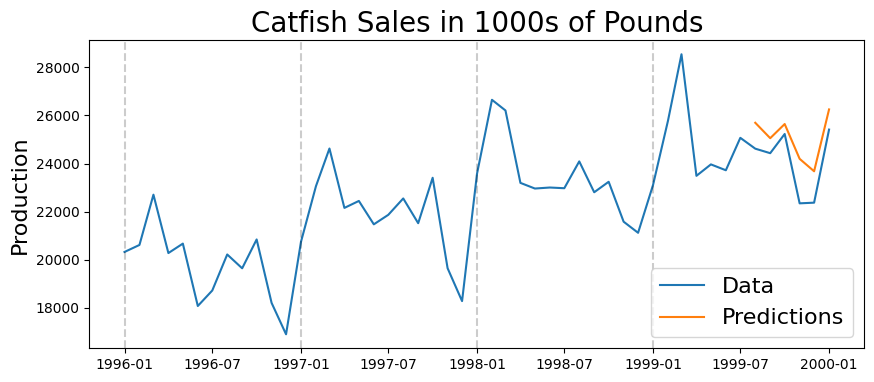

import pandas as pd
import numpy as np
import matplotlib.pyplot as plt
from datetime import datetime
from datetime import timedelta
from pandas.plotting import register_matplotlib_converters
from statsmodels.tsa.stattools import acf, pacf
from statsmodels.tsa.statespace.sarimax import SARIMAX
register_matplotlib_converters()
from time import time
import os
data_folder = '../data/'
9: SARIMA Model#
def parser(s):
return datetime.strptime(s, '%Y-%m-%d')
#Catfish Sales Data
catfish_sales = pd.read_csv(os.path.join(data_folder, 'catfish.csv'),
parse_dates=['Date'], index_col='Date'
)
catfish_sales.head()
| Total | |
|---|---|
| Date | |
| 1986-01-01 | 9034 |
| 1986-02-01 | 9596 |
| 1986-03-01 | 10558 |
| 1986-04-01 | 9002 |
| 1986-05-01 | 9239 |
#infer the frequency of the data
catfish_sales = catfish_sales.asfreq(pd.infer_freq(catfish_sales.index))
start_date = datetime(1996,1,1)
end_date = datetime(2000,1,1)
lim_catfish_sales = catfish_sales[start_date:end_date]
plt.figure(figsize=(10,4))
plt.plot(lim_catfish_sales)
plt.title('Catfish Sales in 1000s of Pounds', fontsize=20)
plt.ylabel('Sales', fontsize=16)
for year in range(start_date.year,end_date.year):
plt.axvline(pd.to_datetime(str(year)+'-01-01'), color='k', linestyle='--', alpha=0.2)
Remove the trend#
first_diff = lim_catfish_sales.diff()[1:]
plt.figure(figsize=(10,4))
plt.plot(first_diff)
plt.title('Catfish Sales in 1000s of Pounds', fontsize=20)
plt.ylabel('Sales', fontsize=16)
for year in range(start_date.year,end_date.year):
plt.axvline(pd.to_datetime(str(year)+'-01-01'), color='k', linestyle='--', alpha=0.2)
plt.axhline(0, color='k', linestyle='--', alpha=0.2)
<matplotlib.lines.Line2D at 0x7fbb14843af0>
ACF#
acf_vals = acf(first_diff)
num_lags = min(20, len(acf_vals))
plt.bar(range(num_lags), acf_vals[:num_lags])
<BarContainer object of 17 artists>
Based on ACF, we should start with a seasonal MA process#
PACF#
pacf_vals = pacf(first_diff)
num_lags = 15
plt.bar(range(num_lags), pacf_vals[:num_lags])
<BarContainer object of 15 artists>
Based on PACF, we should start with a seasonal AR process#
Get training and testing sets#
train_end = datetime(1999,7,1)
test_end = datetime(2000,1,1)
train_data = lim_catfish_sales[:train_end]
test_data = lim_catfish_sales[train_end + timedelta(days=1):test_end]
Fit the SARIMA Model#
my_order = (0,1,0)
my_seasonal_order = (1, 0, 1, 12)
# define model
model = SARIMAX(train_data, order=my_order, seasonal_order=my_seasonal_order)
#fit the model
start = time()
model_fit = model.fit()
end = time()
print('Model Fitting Time:', end - start)
/home/ubuntu/Documents/Projects/STI_FX_Intervention/.venv/lib/python3.9/site-packages/statsmodels/tsa/statespace/sarimax.py:997: UserWarning: Non-stationary starting seasonal autoregressive Using zeros as starting parameters.
warn('Non-stationary starting seasonal autoregressive'
/home/ubuntu/Documents/Projects/STI_FX_Intervention/.venv/lib/python3.9/site-packages/statsmodels/tsa/statespace/sarimax.py:1009: UserWarning: Non-invertible starting seasonal moving average Using zeros as starting parameters.
warn('Non-invertible starting seasonal moving average'
This problem is unconstrained.
RUNNING THE L-BFGS-B CODE
* * *
Machine precision = 2.220D-16
N = 3 M = 10
At X0 0 variables are exactly at the bounds
At iterate 0 f= 8.87298D+00 |proj g|= 1.21940D+00
At iterate 5 f= 8.58382D+00 |proj g|= 3.02862D-01
At iterate 10 f= 8.55722D+00 |proj g|= 1.37619D-03
At iterate 15 f= 8.55722D+00 |proj g|= 1.04073D-03
At iterate 20 f= 8.55706D+00 |proj g|= 2.63664D-02
At iterate 25 f= 8.53842D+00 |proj g|= 1.19055D-01
At iterate 30 f= 8.50954D+00 |proj g|= 1.09968D-01
At iterate 35 f= 8.50313D+00 |proj g|= 6.47363D-05
* * *
Tit = total number of iterations
Tnf = total number of function evaluations
Tnint = total number of segments explored during Cauchy searches
Skip = number of BFGS updates skipped
Nact = number of active bounds at final generalized Cauchy point
Projg = norm of the final projected gradient
F = final function value
* * *
N Tit Tnf Tnint Skip Nact Projg F
3 36 42 1 0 0 9.890D-06 8.503D+00
F = 8.5031324794697483
CONVERGENCE: NORM_OF_PROJECTED_GRADIENT_<=_PGTOL
Model Fitting Time: 0.39024806022644043
#summary of the model
print(model_fit.summary())
SARIMAX Results
============================================================================================
Dep. Variable: Total No. Observations: 43
Model: SARIMAX(0, 1, 0)x(1, 0, [1], 12) Log Likelihood -365.635
Date: Wed, 22 Mar 2023 AIC 737.269
Time: 13:04:46 BIC 742.482
Sample: 01-01-1996 HQIC 739.180
- 07-01-1999
Covariance Type: opg
==============================================================================
coef std err z P>|z| [0.025 0.975]
------------------------------------------------------------------------------
ar.S.L12 0.8250 0.120 6.848 0.000 0.589 1.061
ma.S.L12 -0.5187 0.197 -2.632 0.008 -0.905 -0.132
sigma2 1.78e+06 4.7e+05 3.791 0.000 8.6e+05 2.7e+06
===================================================================================
Ljung-Box (L1) (Q): 2.82 Jarque-Bera (JB): 1.13
Prob(Q): 0.09 Prob(JB): 0.57
Heteroskedasticity (H): 0.81 Skew: -0.30
Prob(H) (two-sided): 0.70 Kurtosis: 2.46
===================================================================================
Warnings:
[1] Covariance matrix calculated using the outer product of gradients (complex-step).
#get the predictions and residuals
predictions = model_fit.forecast(len(test_data))
predictions = pd.Series(predictions, index=test_data.index)
residuals = test_data.squeeze() - predictions.squeeze()
plt.figure(figsize=(10,4))
plt.plot(residuals)
plt.axhline(0, linestyle='--', color='k')
plt.title('Residuals from SARIMA Model', fontsize=20)
plt.ylabel('Error', fontsize=16)
Text(0, 0.5, 'Error')
plt.figure(figsize=(10,4))
plt.plot(lim_catfish_sales)
plt.plot(predictions)
plt.legend(('Data', 'Predictions'), fontsize=16)
plt.title('Catfish Sales in 1000s of Pounds', fontsize=20)
plt.ylabel('Production', fontsize=16)
for year in range(start_date.year,end_date.year):
plt.axvline(pd.to_datetime(str(year)+'-01-01'), color='k', linestyle='--', alpha=0.2)

test_data\
.shape
(6, 1)
print('Mean Absolute Percent Error:', round(np.mean(abs(residuals/test_data.squeeze())),4))
Mean Absolute Percent Error: 0.0433
print('Root Mean Squared Error:', np.sqrt(np.mean(residuals**2)))
Root Mean Squared Error: 1122.3056943982156
Using the Rolling Forecast Origin#
rolling_predictions = test_data.squeeze().copy()
for train_end in test_data.index:
train_data = lim_catfish_sales[:train_end-timedelta(days=1)]
model = SARIMAX(train_data, order=my_order, seasonal_order=my_seasonal_order)
model_fit = model.fit()
pred = model_fit.forecast()
rolling_predictions[train_end] = pred
/home/ubuntu/Documents/Projects/STI_FX_Intervention/.venv/lib/python3.9/site-packages/statsmodels/tsa/statespace/sarimax.py:997: UserWarning: Non-stationary starting seasonal autoregressive Using zeros as starting parameters.
warn('Non-stationary starting seasonal autoregressive'
/home/ubuntu/Documents/Projects/STI_FX_Intervention/.venv/lib/python3.9/site-packages/statsmodels/tsa/statespace/sarimax.py:1009: UserWarning: Non-invertible starting seasonal moving average Using zeros as starting parameters.
warn('Non-invertible starting seasonal moving average'
This problem is unconstrained.
RUNNING THE L-BFGS-B CODE
* * *
Machine precision = 2.220D-16
N = 3 M = 10
At X0 0 variables are exactly at the bounds
At iterate 0 f= 8.87298D+00 |proj g|= 1.21940D+00
At iterate 5 f= 8.58382D+00 |proj g|= 3.02862D-01
At iterate 10 f= 8.55722D+00 |proj g|= 1.37619D-03
At iterate 15 f= 8.55722D+00 |proj g|= 1.04073D-03
At iterate 20 f= 8.55706D+00 |proj g|= 2.63664D-02
At iterate 25 f= 8.53842D+00 |proj g|= 1.19055D-01
At iterate 30 f= 8.50954D+00 |proj g|= 1.09968D-01
At iterate 35 f= 8.50313D+00 |proj g|= 6.47363D-05
* * *
Tit = total number of iterations
Tnf = total number of function evaluations
Tnint = total number of segments explored during Cauchy searches
Skip = number of BFGS updates skipped
Nact = number of active bounds at final generalized Cauchy point
Projg = norm of the final projected gradient
F = final function value
* * *
N Tit Tnf Tnint Skip Nact Projg F
3 36 42 1 0 0 9.890D-06 8.503D+00
F = 8.5031324794697483
CONVERGENCE: NORM_OF_PROJECTED_GRADIENT_<=_PGTOL
RUNNING THE L-BFGS-B CODE
* * *
Machine precision = 2.220D-16
N = 3 M = 10
At X0 0 variables are exactly at the bounds
At iterate 0 f= 8.86146D+00 |proj g|= 1.17851D+00
At iterate 5 f= 8.58541D+00 |proj g|= 2.95359D-01
At iterate 10 f= 8.55888D+00 |proj g|= 1.27378D-03
At iterate 15 f= 8.55887D+00 |proj g|= 1.07237D-03
At iterate 20 f= 8.55865D+00 |proj g|= 2.23676D-02
At iterate 25 f= 8.54422D+00 |proj g|= 9.33866D-02
At iterate 30 f= 8.51628D+00 |proj g|= 6.40516D-03
At iterate 35 f= 8.50320D+00 |proj g|= 5.14638D-02
At iterate 40 f= 8.50171D+00 |proj g|= 3.18832D-04
* * *
Tit = total number of iterations
Tnf = total number of function evaluations
Tnint = total number of segments explored during Cauchy searches
Skip = number of BFGS updates skipped
Nact = number of active bounds at final generalized Cauchy point
Projg = norm of the final projected gradient
F = final function value
* * *
N Tit Tnf Tnint Skip Nact Projg F
3 42 57 1 0 0 1.150D-05 8.502D+00
F = 8.5017078608695442
CONVERGENCE: REL_REDUCTION_OF_F_<=_FACTR*EPSMCH
RUNNING THE L-BFGS-B CODE
* * *
Machine precision = 2.220D-16
N = 3 M = 10
At X0 0 variables are exactly at the bounds
At iterate 0 f= 8.87333D+00 |proj g|= 1.28467D+00
At iterate 5 f= 8.55730D+00 |proj g|= 2.83954D-01
/home/ubuntu/Documents/Projects/STI_FX_Intervention/.venv/lib/python3.9/site-packages/statsmodels/tsa/statespace/sarimax.py:997: UserWarning: Non-stationary starting seasonal autoregressive Using zeros as starting parameters.
warn('Non-stationary starting seasonal autoregressive'
/home/ubuntu/Documents/Projects/STI_FX_Intervention/.venv/lib/python3.9/site-packages/statsmodels/tsa/statespace/sarimax.py:1009: UserWarning: Non-invertible starting seasonal moving average Using zeros as starting parameters.
warn('Non-invertible starting seasonal moving average'
This problem is unconstrained.
/home/ubuntu/Documents/Projects/STI_FX_Intervention/.venv/lib/python3.9/site-packages/statsmodels/tsa/statespace/sarimax.py:997: UserWarning: Non-stationary starting seasonal autoregressive Using zeros as starting parameters.
warn('Non-stationary starting seasonal autoregressive'
/home/ubuntu/Documents/Projects/STI_FX_Intervention/.venv/lib/python3.9/site-packages/statsmodels/tsa/statespace/sarimax.py:1009: UserWarning: Non-invertible starting seasonal moving average Using zeros as starting parameters.
warn('Non-invertible starting seasonal moving average'
This problem is unconstrained.
At iterate 10 f= 8.53521D+00 |proj g|= 1.26069D-03
At iterate 15 f= 8.53521D+00 |proj g|= 1.24035D-03
At iterate 20 f= 8.53507D+00 |proj g|= 1.47441D-02
At iterate 25 f= 8.52406D+00 |proj g|= 8.24832D-02
At iterate 30 f= 8.50492D+00 |proj g|= 6.77856D-02
At iterate 35 f= 8.49450D+00 |proj g|= 1.54197D-02
* * *
Tit = total number of iterations
Tnf = total number of function evaluations
Tnint = total number of segments explored during Cauchy searches
Skip = number of BFGS updates skipped
Nact = number of active bounds at final generalized Cauchy point
Projg = norm of the final projected gradient
F = final function value
* * *
N Tit Tnf Tnint Skip Nact Projg F
3 39 59 1 0 0 1.504D-05 8.494D+00
F = 8.4942658984964972
CONVERGENCE: REL_REDUCTION_OF_F_<=_FACTR*EPSMCH
RUNNING THE L-BFGS-B CODE
* * *
Machine precision = 2.220D-16
N = 3 M = 10
At X0 0 variables are exactly at the bounds
At iterate 0 f= 8.97326D+00 |proj g|= 1.68058D+00
At iterate 5 f= 8.50772D+00 |proj g|= 1.82687D-01
At iterate 10 f= 8.49272D+00 |proj g|= 8.30154D-04
* * *
Tit = total number of iterations
Tnf = total number of function evaluations
Tnint = total number of segments explored during Cauchy searches
Skip = number of BFGS updates skipped
Nact = number of active bounds at final generalized Cauchy point
Projg = norm of the final projected gradient
F = final function value
* * *
N Tit Tnf Tnint Skip Nact Projg F
3 12 14 1 0 0 9.774D-05 8.493D+00
F = 8.4927175966901274
CONVERGENCE: REL_REDUCTION_OF_F_<=_FACTR*EPSMCH
RUNNING THE L-BFGS-B CODE
* * *
Machine precision = 2.220D-16
N = 3 M = 10
At X0 0 variables are exactly at the bounds
At iterate 0 f= 8.97866D+00 |proj g|= 1.62914D+00
/home/ubuntu/Documents/Projects/STI_FX_Intervention/.venv/lib/python3.9/site-packages/statsmodels/tsa/statespace/sarimax.py:997: UserWarning: Non-stationary starting seasonal autoregressive Using zeros as starting parameters.
warn('Non-stationary starting seasonal autoregressive'
/home/ubuntu/Documents/Projects/STI_FX_Intervention/.venv/lib/python3.9/site-packages/statsmodels/tsa/statespace/sarimax.py:1009: UserWarning: Non-invertible starting seasonal moving average Using zeros as starting parameters.
warn('Non-invertible starting seasonal moving average'
This problem is unconstrained.
/home/ubuntu/Documents/Projects/STI_FX_Intervention/.venv/lib/python3.9/site-packages/statsmodels/tsa/statespace/sarimax.py:997: UserWarning: Non-stationary starting seasonal autoregressive Using zeros as starting parameters.
warn('Non-stationary starting seasonal autoregressive'
/home/ubuntu/Documents/Projects/STI_FX_Intervention/.venv/lib/python3.9/site-packages/statsmodels/tsa/statespace/sarimax.py:1009: UserWarning: Non-invertible starting seasonal moving average Using zeros as starting parameters.
warn('Non-invertible starting seasonal moving average'
This problem is unconstrained.
/home/ubuntu/Documents/Projects/STI_FX_Intervention/.venv/lib/python3.9/site-packages/statsmodels/tsa/statespace/sarimax.py:1009: UserWarning: Non-invertible starting seasonal moving average Using zeros as starting parameters.
warn('Non-invertible starting seasonal moving average'
This problem is unconstrained.
At iterate 5 f= 8.52124D+00 |proj g|= 1.34321D-01
At iterate 10 f= 8.50097D+00 |proj g|= 1.43343D-03
At iterate 15 f= 8.50096D+00 |proj g|= 3.70428D-04
At iterate 20 f= 8.50084D+00 |proj g|= 3.94992D-03
At iterate 25 f= 8.49494D+00 |proj g|= 2.13762D-02
At iterate 30 f= 8.48986D+00 |proj g|= 1.55626D-03
* * *
Tit = total number of iterations
Tnf = total number of function evaluations
Tnint = total number of segments explored during Cauchy searches
Skip = number of BFGS updates skipped
Nact = number of active bounds at final generalized Cauchy point
Projg = norm of the final projected gradient
F = final function value
* * *
N Tit Tnf Tnint Skip Nact Projg F
3 33 38 1 0 0 2.780D-05 8.490D+00
F = 8.4898467447992996
CONVERGENCE: REL_REDUCTION_OF_F_<=_FACTR*EPSMCH
RUNNING THE L-BFGS-B CODE
* * *
Machine precision = 2.220D-16
N = 3 M = 10
At X0 0 variables are exactly at the bounds
At iterate 0 f= 9.50185D+00 |proj g|= 7.44698D-01
At iterate 5 f= 8.51191D+00 |proj g|= 5.91494D-04
At iterate 10 f= 8.50176D+00 |proj g|= 1.05432D-01
At iterate 15 f= 8.48764D+00 |proj g|= 1.00690D-02
* * *
Tit = total number of iterations
Tnf = total number of function evaluations
Tnint = total number of segments explored during Cauchy searches
Skip = number of BFGS updates skipped
Nact = number of active bounds at final generalized Cauchy point
Projg = norm of the final projected gradient
F = final function value
* * *
N Tit Tnf Tnint Skip Nact Projg F
3 18 42 1 0 0 8.047D-05 8.488D+00
F = 8.4876232442262598
CONVERGENCE: REL_REDUCTION_OF_F_<=_FACTR*EPSMCH
rolling_residuals = test_data.squeeze() - rolling_predictions.squeeze()
plt.figure(figsize=(10,4))
plt.plot(rolling_residuals)
plt.axhline(0, linestyle='--', color='k')
plt.title('Rolling Forecast Residuals from SARIMA Model', fontsize=20)
plt.ylabel('Error', fontsize=16)
Text(0, 0.5, 'Error')
plt.figure(figsize=(10,4))
plt.plot(lim_catfish_sales)
plt.plot(rolling_predictions)
plt.legend(('Data', 'Predictions'), fontsize=16)
plt.title('Catfish Sales in 1000s of Pounds', fontsize=20)
plt.ylabel('Production', fontsize=16)
for year in range(start_date.year,end_date.year):
plt.axvline(pd.to_datetime(str(year)+'-01-01'), color='k', linestyle='--', alpha=0.2)
print('Mean Absolute Percent Error:', round(np.mean(abs(rolling_residuals/test_data.squeeze())),4))
Mean Absolute Percent Error: 0.0298
print('Root Mean Squared Error:', np.sqrt(np.mean(rolling_residuals**2)))
Root Mean Squared Error: 829.3411406660159